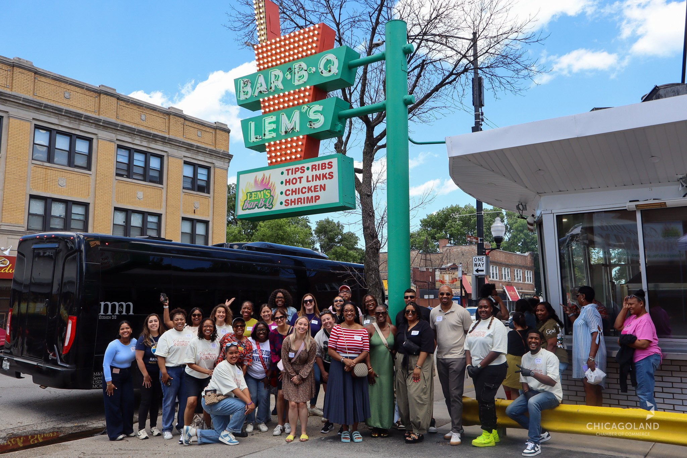
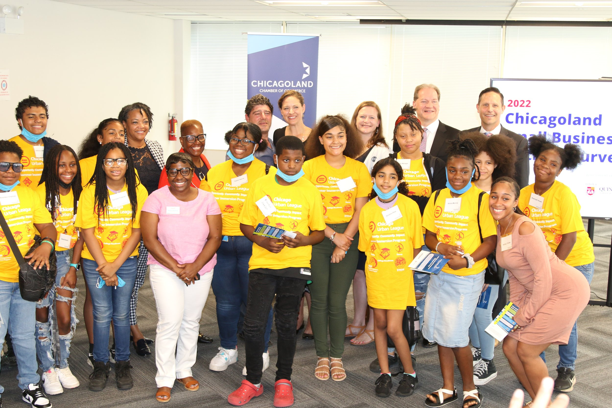
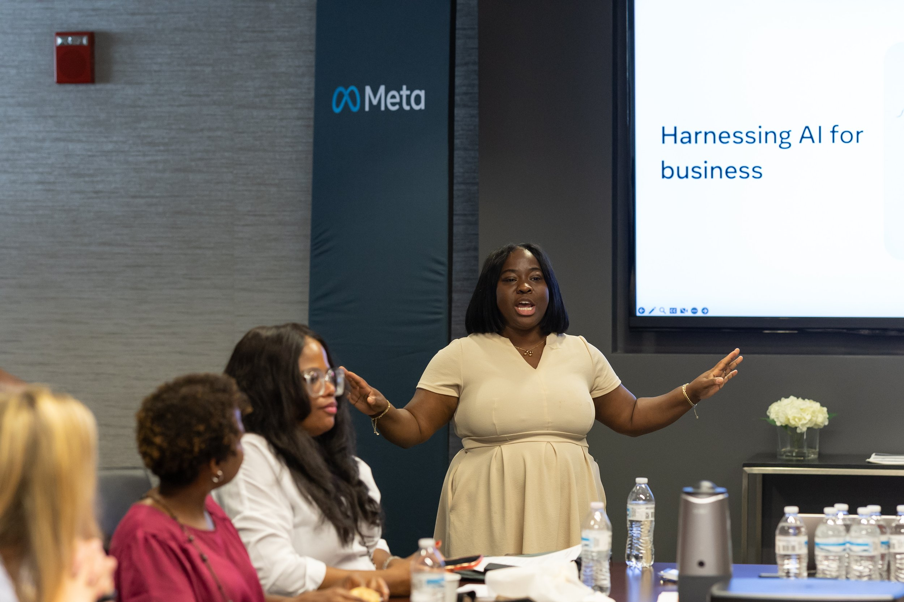

Resources You Can Actually Navigate
Residents deserve clear communication, responsive service, and accessible information. The ward office should help people find resources, resolve concerns, and understand how their voices influence decisions.
2027 Chicago Municipal Election · 6th Ward
I have spent my career bringing businesses, institutions, government agencies, and community partners together to create opportunity across Chicago. Now I'm bringing that experience home to build a stronger 6th Ward.
“A people without the knowledge of their past history, origin and culture is like a tree without roots.”
— Marcus Garvey
On the Ground
I've seen how opportunity is created — and why some communities are left waiting. A recent tour of the 6th Ward brought residents, businesses, neighborhood organizations, and community leaders together to listen, learn, and imagine what's possible when we work toward a shared vision.

What We're Working Toward
Residents deserve clear communication, responsive service, and accessible information. The ward office should help people find resources, resolve concerns, and understand how their voices influence decisions.

I will support children, parents, caregivers, and seniors by connecting families to resources, strengthening neighborhood spaces, and ensuring residents have a voice in the decisions that shape daily life.

I will strengthen commercial corridors, support local businesses, connect residents to jobs and training, and attract investment that creates lasting opportunity throughout the 6th Ward.
How Change Happens
The challenges facing our neighborhoods can't be solved by one office or one organization. Progress happens when everyone is at the same table. As alderwoman, my job is to bring these voices together, build stronger partnerships, and turn community priorities into action.
Every voice deserves a seat at the table.
Get Involved
This campaign is about families, access, opportunity, and the power of neighbors working together. Join us as we listen, organize, and build a stronger future for every part of the 6th Ward.
Help us meet residents, collect petition signatures, host events, and grow the campaign.
Support the outreach, organizing, and resources needed to reach voters across the ward.
Get campaign updates, community resources, event announcements, and ways to get involved.
Three Priorities
The vision is simple: create opportunity, connect residents to resources, and restore pride in every neighborhood. These three priorities will guide every decision we make and every partnership we build.
Connect residents to better jobs, workforce training, apprenticeships, business support, and access to capital — so every family has the opportunity to grow and succeed.
Make the alderwoman's office the trusted place where residents can easily access programs, services, workshops, and information that improve everyday life.
Restore pride in the 6th Ward through cleaner blocks, stronger neighborhoods, responsive city services, and investment that strengthens every community.